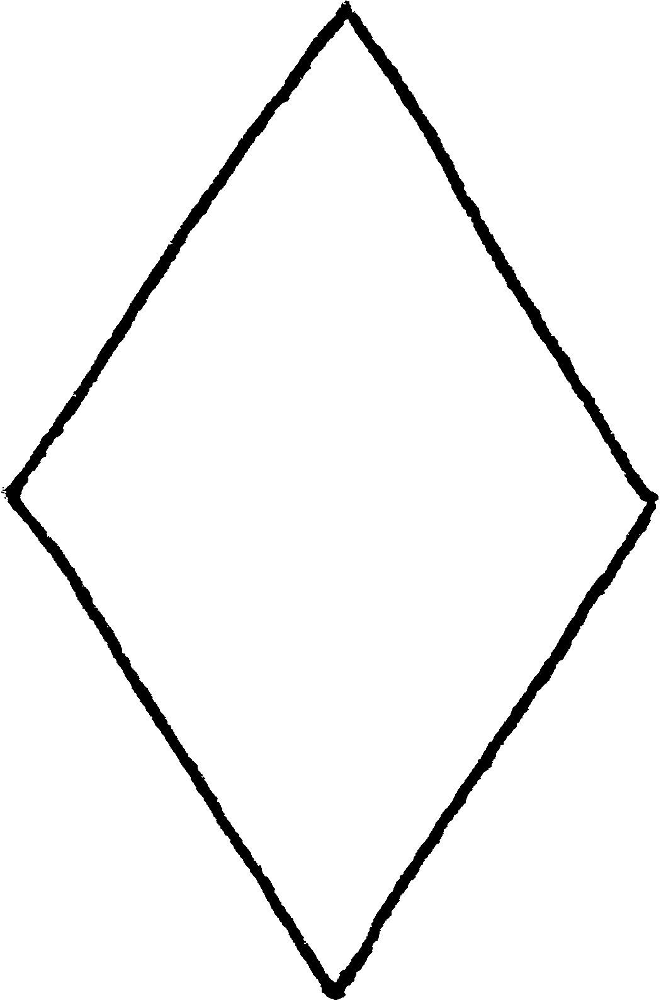
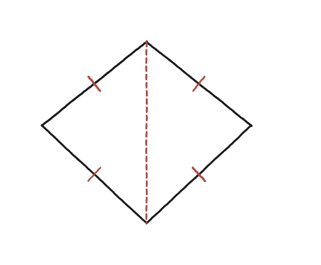
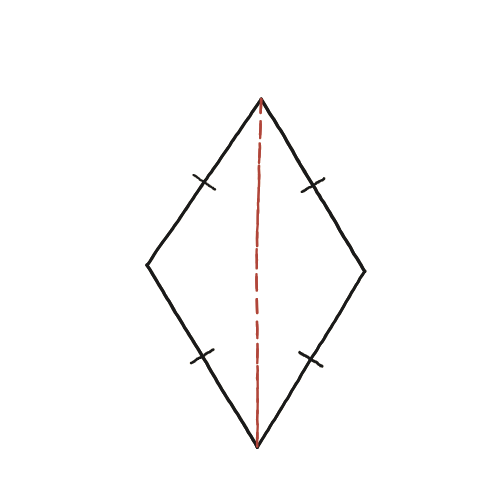

Els costats oposats d'un rombe, sempre són paral·lels? Les diagonals són perpendiculars?

Dues preguntes, una sola propietat
Encara que l'enunciat en faci dues, no calen dos arguments diferents: un rombe té els quatre costats iguals, i aquesta única propietat, ben mirada des de dos angles diferents, respon totes dues preguntes alhora.
El plec de paper
Imaginem el rombe com un paper que es doblega per una de les diagonals. Aquesta diagonal el divideix en dos triangles que comparteixen la diagonal com a costat comú; els altres dos costats de cada triangle són costats del rombe, i com que els quatre costats del rombe són iguals, els dos triangles tenen els tres costats iguals dos a dos —són congruents pel criteri costat-costat-costat (SSS).

El paral·lelisme, dels dos triangles congruents
Com que els dos triangles són congruents, els angles que cadascun forma amb la diagonal —a banda i banda— són iguals. Aquesta igualtat d'angles alterns és exactament la condició que fa que dues rectes tallades per una transversal (aquí, la diagonal) siguin paral·leles: per tant, els dos costats del rombe que queden a banda i banda de la diagonal són paral·lels als seus respectius costats oposats.
La perpendicularitat: la diagonal com a bisectriu
Per a la perpendicularitat cal un pas més, però n'hi ha prou amb una aplicació, no dues. Anomenem els vèrtexs ABCD. Fem el plec ara per l'altra diagonal, AC: parteix el rombe en els triangles ABC i ADC, que tornen a ser congruents per SSS (AB=AD, CB=CD, i AC compartida). D'aquesta congruència surt que l'angle BAC és igual a l'angle DAC: la diagonal AC biseca l'angle del vèrtex A.
Ara mirem el triangle ABD tot sol. Té AB=AD —són dos costats del rombe—, o sigui que és isòsceles, i la seva base és la diagonal BD. I en un triangle isòsceles, la bisectriu de l'angle format pels dos costats iguals és també perpendicular a la base. Aquesta bisectriu és, precisament, AC. Per tant AC és perpendicular a BD: les dues diagonals del rombe es tallen en angle recte.

Sí a totes dues: els costats oposats d'un rombe són sempre paral·lels (dels angles alterns iguals que crea una diagonal en dos triangles congruents per SSS) i les diagonals són sempre perpendiculars (perquè cada diagonal és la bisectriu d'un triangle isòsceles format per l'altra, i en un isòsceles la bisectriu de l'angle del vèrtex és perpendicular a la base).
Comprovació
Agafa els quatre punts (±3,0) i (0,±4): els quatre costats fan √(3²+4²)=5 (el triangle 3-4-5), o sigui que és un rombe de debò, i el pendent d'un costat coincideix amb el del costat oposat. Fixa't que aquesta comprovació recorre el camí invers al de la demostració —parteix de dues diagonals perpendiculars i n'obté un rombe—: serveix per veure que els números quadren, no per demostrar el teorema.